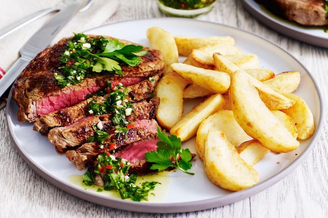

Paprika Beef Steaks with Chimichurri Sauce and Wedges

Description
South American-inspired paprika beef served with chimichurri sauce and wedges.
recipe from
taste.com.au
Ingredients
- 900g pkt frozen potato wedges
- 4 x 250g Coles Australian beef scotch fillet steaks
- 1/2 cup (125ml) extra virgin olive oil
- 2/3 cup chopped flat-leaf parsley
- 1/3 cup chopped oregano
- 1 garlic clove, finely chopped
- 1 small red chilli, seeded, finely chopped
- 3 tsp white vinegar
- Salad leaves, to serve
- Flat-leaf parsley leaves, to garnish
Method
- Bake wedges following packet directions.
- For the Steak:
- Brush steaks with 1 tablespoon oil then sprinkle with paprika.
- Heat a large frying pan over medium-high heat. Cook steaks for 3 mins each side or until cooked to your liking.
- Transfer to a plate. Cover. Set aside for 5 mins to rest.
- Combine remaining oil, chopped parsley, oregano, garlic, chilli and vinegar in a small bowl. Season.
- Divide steaks, wedges and salad among serving plates. Drizzle the chimichurri sauce over the steaks and top with parsley leaves.
back to main page